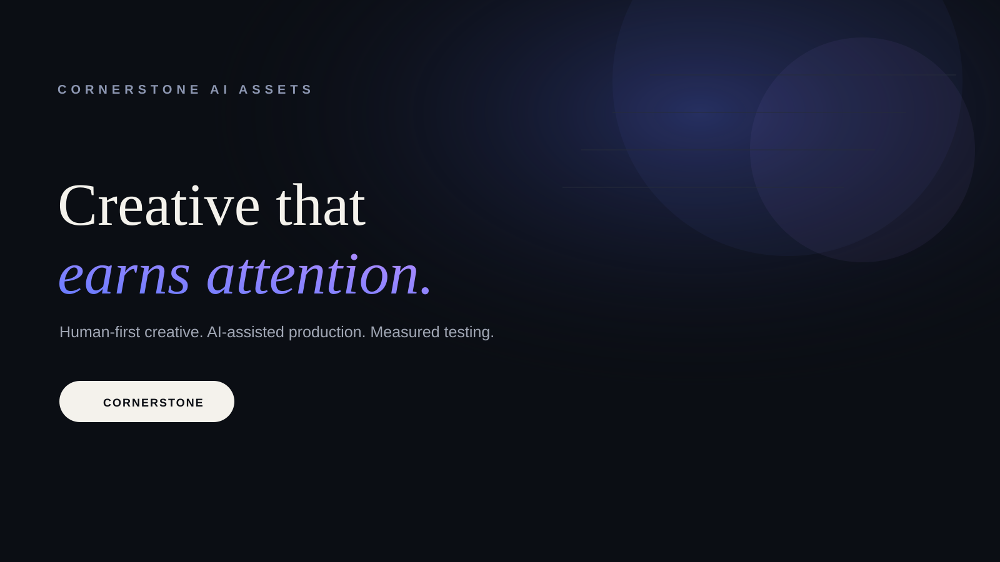

Cornerstone AI Assets · Brand Board
Typography
Creative that
earns attention.
earns attention.
Display Cormorant Garamond · Body Inter · Utility IBM Plex Mono
Palette
#0B0E14 · Ink
#F4F2EC · Paper
#6B7CFF · Cobalt
#B18CFF · Violet
#2A3140 · Line
Design rules
Editorial, asymmetrical, deliberate. Dark surfaces. Large serif typography. Utility labels in mono. Cobalt/violet replaces the automotive business's gold. The site should feel like a specialist creative studio, not another AI SaaS dashboard.
Social banner

Email signature